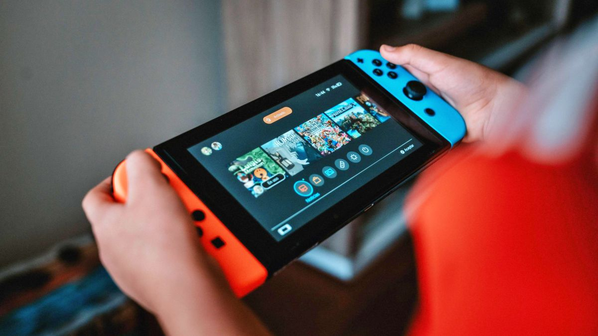
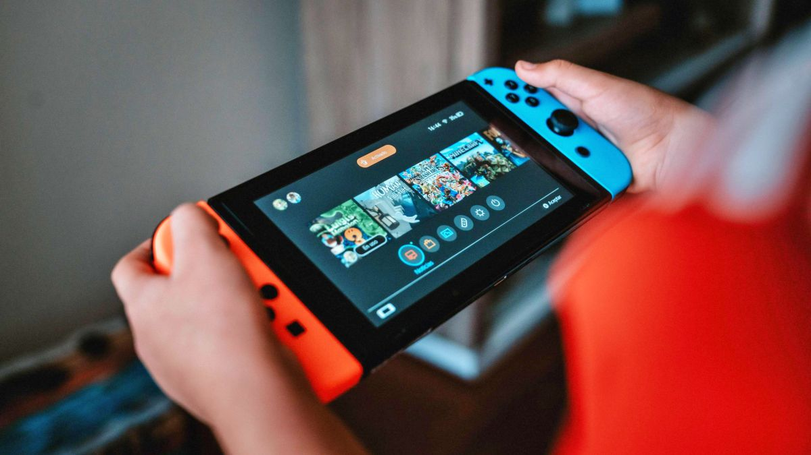

The Nintendo Switch is a console that does a lot of things all at once. Like the motion controls of the Wii, or the glasses-free 3D of the Nintendo 3DS, or the experimental second screen of the Wii U, the Switch's innovative hybrid design has helped Nintendo to continue to blaze its own trail and do something different.
Nintendo took a bold step with its latest game system. The Switch is a fully functional home game console like the Wii U, but it can also be used as a handheld system like the 3DS. Between its 6-inch tablet body and its detachable, wireless Joy-Con controllers, Nintendo is exploring some very interesting concepts with this device. Instead of directly facing off against the PlayStation 4, PlayStation 5, Xbox One, or Xbox Series X, the Switch represents a whole new path in gaming.